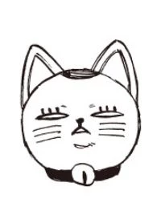

Auteur
Yukinobu Tatsu est un mangaka qui fit ses débuts dans le Gekkan Shônen Magazine de l'éditeur Kôdansha, avec les séries Seigi no Rakugô en 2010, puis avec Fire Ball! en 2013. Il devint ensuite l'assistant de Tatsuki Fujimoto sur Fire Punch, et de Yûji Kaku sur Hell's Paradise. En avril 2021, il lance sa nouvelle œuvre, Dandadan, sur la plateforme Shônen Jump+
- Nom : Yukinobu Tatsu
- Nationalité : Japonaise
- Genre : Homme
- Statut : En activité
- Début : 2010
Synopsis
Momo Ayase et Ken Takakura sont deux lycéens que tout oppose. Tandis que la première ne croit qu'aux esprits, le second ne jure que par les extraterrestres. Incapables de se convaincre, ils se lancent alors un défi : Momo devra se rendre dans un hôpital où des créatures de l'espace sont censées se trouver et Ken dans un tunnel hanté... Or, chacun va faire une rencontre d'un autre genre qui va bouleverser leurs vies et lier leurs sorts. C'est le début d'une romance survoltée où l'occulte, le paranormal et le surnaturel se bousculent dans un chaos haletant !
Personnages Principaux
Momo Ayase (綾瀬 桃)
Voix japonaise : Shion Wakayama
Une lycéenne qui croit aux fantômes et au surnaturel, élevée par sa grand-mère qui est médium. Elle a le béguin pour l’acteur Ken Takakura et est attirée par les hommes qui ont un physique ou une personnalité proche de lui. Elle est également consciente que le lycéen Ken a le même nom que l'acteur, c'est pour cela qu'elle l'appelle intentionnellement par le surnom "Okarun". Elle semble par la suite développer des sentiments pour ce dernier. Après avoir été enlevée par des extraterrestres de la planète Serpo, elle découvre qu’elle a des pouvoirs psychocinétiques, lui permettant de visualiser les "auras" des personnes et des objets, et est capable de les « saisir » et les contrôler en matérialisant des mains.
Ken Takakura (高倉 健)
Voix japonaise : Natsuki Hanae
Un lycéen timide, modeste et servile qui est passionné par les extra-terrestres. Lorsqu’il était plus jeune, il était sans amis, ce qui l'a poussé à s'intéresser à l'occulte dans l'optique de devenir ami avec un être d'une autre planète. Il va découvrir qu'il a des intérêts communs avec Ayase dans le surnaturel et va la persuader que les extraterrestres existent, alors qu'elle va faire de même avec les fantômes. Pour lui prouver que les fantômes n'existent pas, il va aller dans un tunnel. Mais il va être possédé par la yōkai habitant les lieux, Mémé-Turbo, ce qui va lui donner la capacité d’entrer dans un puissant état démoniaque, lui accordant une immense vitesse. Ayase l’appelle Okarun (オカルン?) de « occulte », puisqu’il partage son nom avec l’acteur Ken Takakura, son coup de foudre de célébrité.
Seiko Ayase (綾瀬 星子)
Voix japonaise : Nana Mizuki
Une médium et la grand-mère de Momo Ayase, avec qui elle vit, même si elle semble avoir la vingtaine. Elle aide Ayase et Okarun à gérer les esprits dangereux et yōkai. Bien qu’elle n’ait aucun pouvoir inné, elle a une connaissance étendue des entités et des malédictions surnaturelles. Elle utilise divers artefacts et le pouvoir emprunté au dieu résidant dans leur ville pour sceller et exorciser les yōkai, bien que ce pouvoir soit limité à la ville elle-même.
Mémé-Turbo (ターボババア)
Voix japonaise : Mayumi Tanaka
Yōkai qui prend la forme d’une femme âgée cruelle et grossière, Mémé-Turbo réconfortait les esprits des filles qui mouraient de mort horrible, mais a commencé à maudire et voler les parties génitales de quiconque entrait sur son territoire. Après sa défaite contre Ayase et Okarun, Seiko scelle son esprit dans une poupée Maneki-neko, et elle accepte de les aider pour le moment jusqu’à ce qu’elle puisse pleinement retrouver ses pouvoirs.
Aira Shiratori (白鳥 愛羅)
Voix japonaise : Ayane Sakura
Une lycéenne de la même école qu’Ayase et Okarun. Après avoir pris conscience de l’existence du surnaturel, Shiratori se proclame "élue" dans une mission pour protéger le monde du mal et oriente son attention vers Ayase, croyant qu’elle est un démon qui doit être arrêté. Semblable à Okarun, elle peut se transformer en une forme démoniaque avec des pouvoirs hérités d’un yōkai appelé Acro-soyeuse (アクロバティックさらさら, Akurobatikku Sarasara?), qui lui donne une immense agilité et des cheveux préhensiles. Elle a le béguin pour Okarun.
Jin Enjoji (円城寺 仁)
Voix japonaise : Kaito Ishikawa
Ami d’enfance d’Ayase et premier amour. Il porte le surnom de Jiji (ジジ?). Après que ses parents ont été hospitalisés parce que sa maison était hantée, Enjoji a emménagé avec Ayase et Seiko avant de passer à l’école d’Ayase. Okarun est jaloux de sa relation avec Ayase, mais Jiji essaie de devenir ami avec lui. Il est possédé par l'« Œil Maléfique », qui se déchaîne aveuglément lorsqu’il contrôle le corps de Jiji.